这份手册按 6 个章节学习
点击下面任意步骤，可以直接跳到对应章节。建议从速览开始，按账号、订阅、下载、入门、进阶的顺序学习。
先把账号和验证方式准备好
优先使用公司指定账号。如果公司尚未统一开通，可先了解个人账号准备流程。
A Gmail/邮箱
- 用于接收 ChatGPT 注册验证码。
- 可使用 Gmail，也可使用其他常用邮箱。
- 建议绑定手机号和备用邮箱，方便找回。
B Apple Account
- 仅在需要通过 App Store 下载移动端时使用。
- Apple 官方称 Apple ID 现为 Apple Account。
- 地区、付款信息按 Apple 官方规则填写，不做规避指导。
C 手机号
- 用于账号安全验证或找回。
- 不要使用他人手机号长期绑定。
- 验证码不要转发给任何人。
D 公司申请
- 部门确有使用需求时，由主管统一申请。
- 说明使用场景、人数、周期和数据类型。
- 涉及敏感数据先咨询 IT/法务。
账号准备清单
把这三项准备好，再开始注册 ChatGPT，会少很多卡点。
1 打开官网
进入 chatgpt.com，选择 Log in 或 Sign up。
2 输入邮箱
使用公司指定邮箱或个人邮箱，按页面提示完成邮箱验证。
3 设置安全信息
设置强密码，按提示完成手机号或双重验证。验证码只给自己看。
4 检查套餐权限
需要 Codex 权限时，先看套餐页面，再按公司流程向 IT 申请。
Welcome to ChatGPT
Sign up / Log in
仿截图：实际按钮位置以官网页面为准。
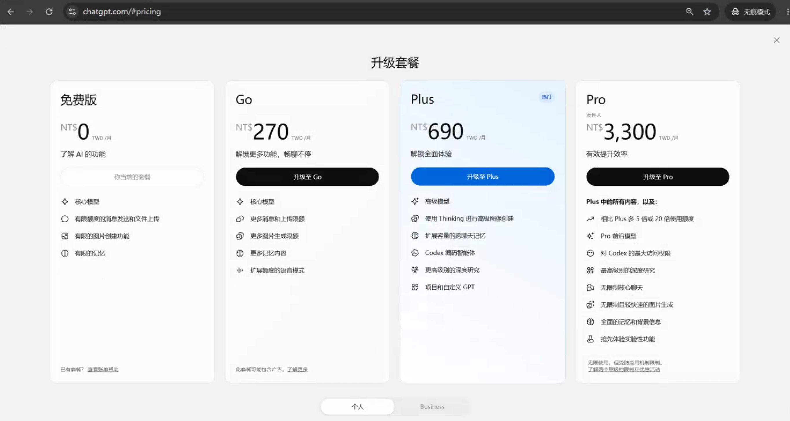
新手优先走图形化桌面版
中文 Codex 页面会展示可用入口；下载按钮位置以页面实时显示为准。
Download Codex
Turn ideas into working software with AI...
2 Windows
点击 Codex 区域的 Windows 下载按钮，按系统提示安装。
3 macOS
点击 macOS 下载按钮。若使用 App Store 或移动端，可能需要 Apple Account。
4 登录同一账号
安装后用 ChatGPT 账号登录；看不到权限时，先核对套餐和公司授权。
先认识界面，再学会控制 Codex
入门阶段不是追求复杂功能，而是学会把任务说清楚、让 Codex 先计划、再安全执行。
先选好项目文件夹，再开始交给 Codex 做事
工作空间可以理解为 Codex 的“办公桌”。不同项目放在不同工作空间里，文件边界、任务记录和审批会更清楚。
设置沙盒
沙盒是 Codex 被允许读写的项目文件夹范围。它能降低误操作风险，详细权限说明请看后面的“功能模块详解 - 权限管理”。
创建工作空间
可以创建多个项目文件夹作为工作空间，让不同任务分开处理。多个任务可并行执行，常见状态包括：进行中、等待批准、完成。
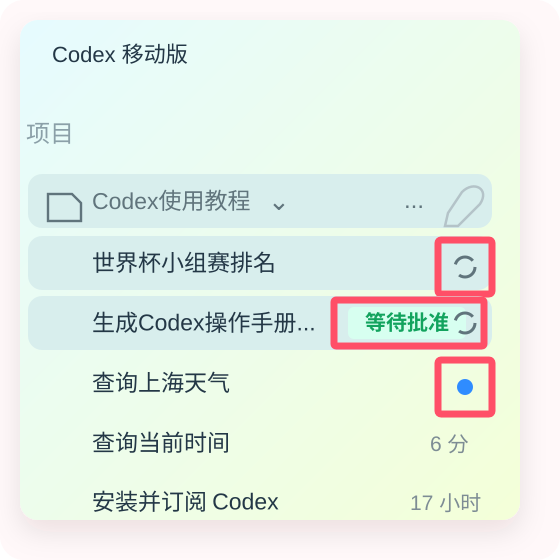
项目归属对话
新建对话时可以选择它属于哪个项目。选择 不使用项目 时，对话会归属到普通对话区域，适合通用 AI 问答、文案草稿、资料解释等任务。
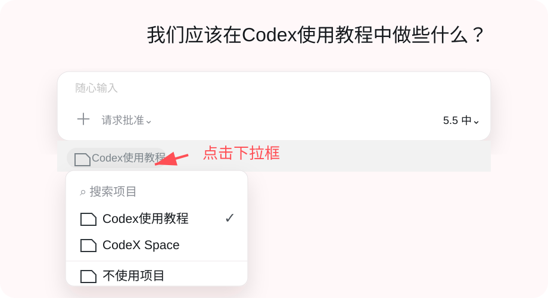
图形化桌面模块
下面是真实 Codex 界面截图，帮助非技术同事先认识侧边栏、对话区、文件/工具区和审批提示。
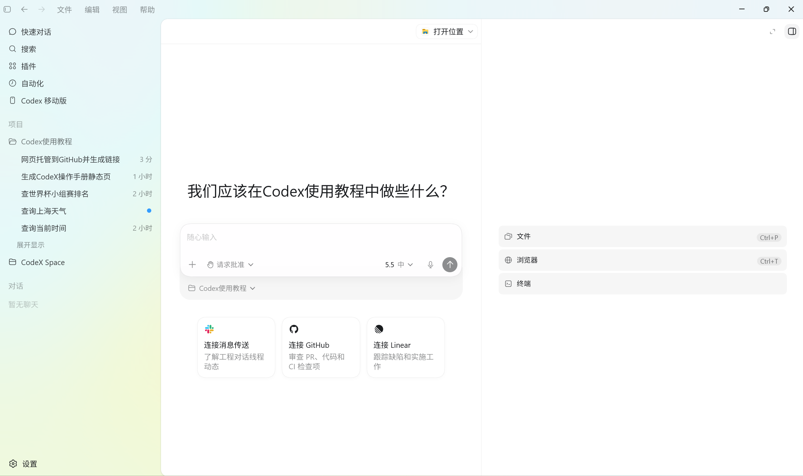
功能模块详解
这一部分先帮同事认识 Codex 桌面应用里最常用的按钮。先会找对话、会管权限、会看额度，再开始做任务，会稳很多。
搜索历史对话
- 点击左侧菜单栏的 搜索，或使用快捷键 Ctrl+G 打开对话搜索。
- 可以搜索所有历史对话，但目前主要搜索 对话标题，不是逐字搜索对话内容。
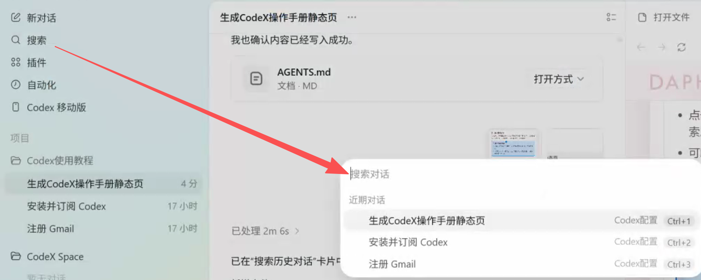
对话重命名与归档
- 双击对话 可以重命名，建议用“部门 + 任务 + 日期”命名。
- 对话太多时，点击对话后面的归档按钮。归档后会从列表移除，可在设置里的已归档对话中取消归档恢复。
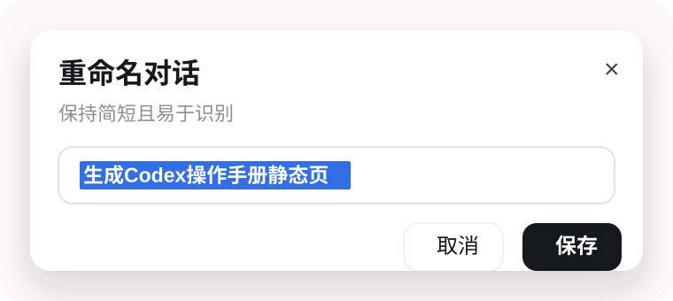
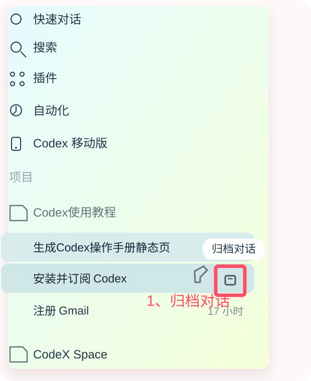
权限管理
- 对话框下方通常有权限下拉选项：请求批准、替我审批、完全访问权限。
- 请求批准：Codex 对沙箱，也就是当前项目文件夹，有读写权限；不能修改沙箱外文件，且默认禁止联网。需要访问外部文件或联网时，会发起提权并等待人工审批。
- 替我审批：Codex 会调用模型对提权操作做安全审查。低风险可自动放行，高风险，例如删除文件，仍需要人工审核。
- 完全访问权限：会无视沙箱限制，可以在电脑上进行更广泛操作。只建议 IT 或明确受控场景使用。
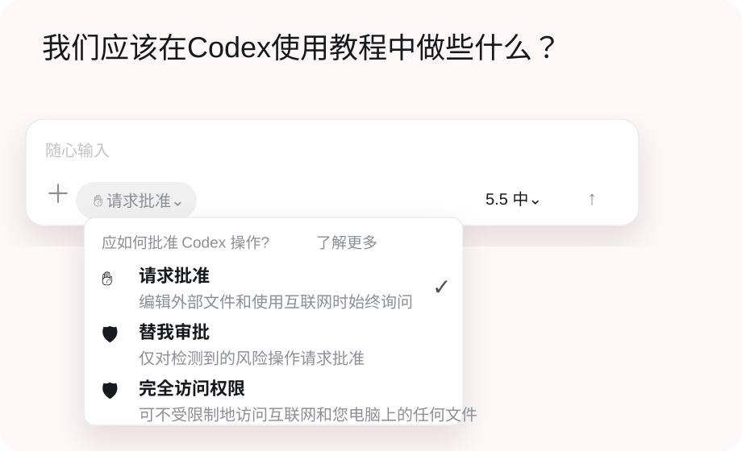
模型选择
- 推理强度：按任务复杂度选择低、中、高、超高；强度越高，Token 消耗越多。
- 模型切换：可按界面可用项选择 GPT-5.5、GPT-5.4、GPT-5.4-Mini 等模型。
- 速度：标准/快速。快速通常响应更快，但可能增加约 1.5 倍 Token 消耗。
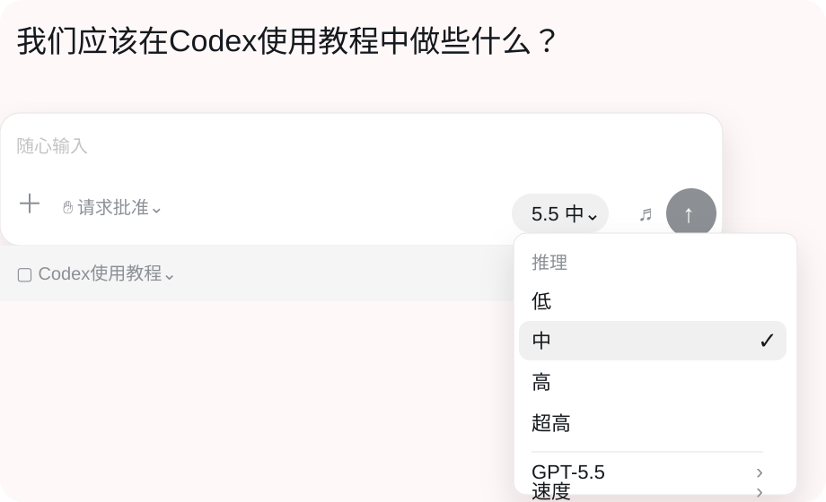
剩余额度
- 在左下角 设置 查看剩余额度。
- 通常会有每 5 小时小额限额和周限额。任意一个达到上限，都可能暂时无法继续使用。
- 额度紧张时，可考虑切换更轻量模型，或把任务拆小。
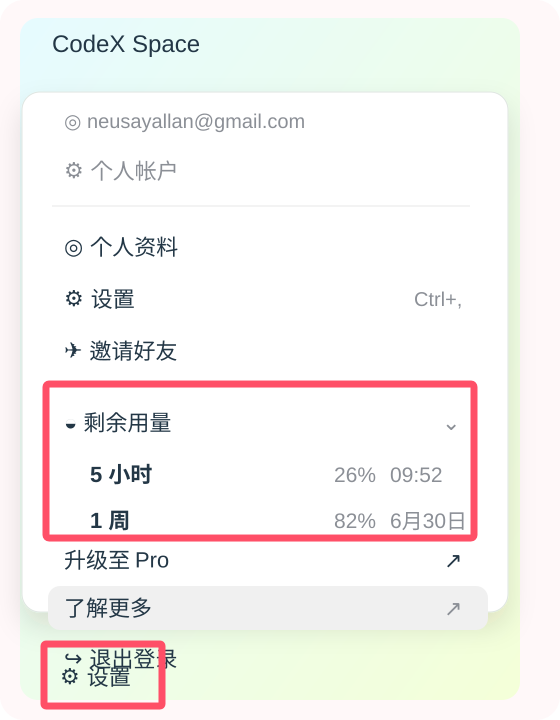
增加参考资料
- 需要增加图片或文件作为参考时，点击对话框左下角的加号 +。
- 上传前先检查是否包含客户信息、合同金额、员工隐私等敏感内容。
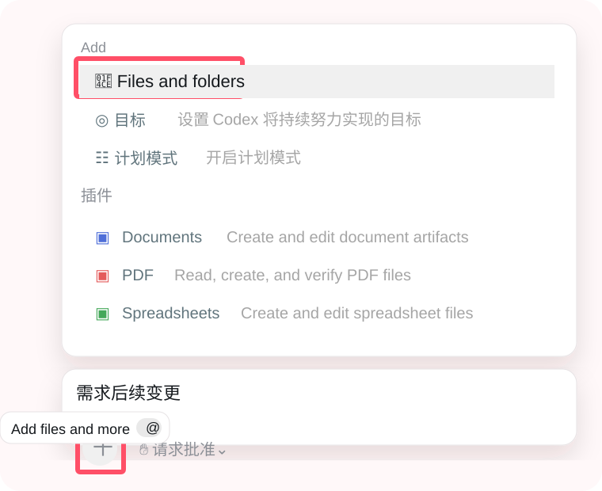
Codex控制与引导
Codex 有个非常强大的功能，就是 Steer 控制、引导。
- 引导：当我们发现在 AI 执行过程中，理解错了我们的意思，就不应该让它继续执行了，此时可以人工干预。
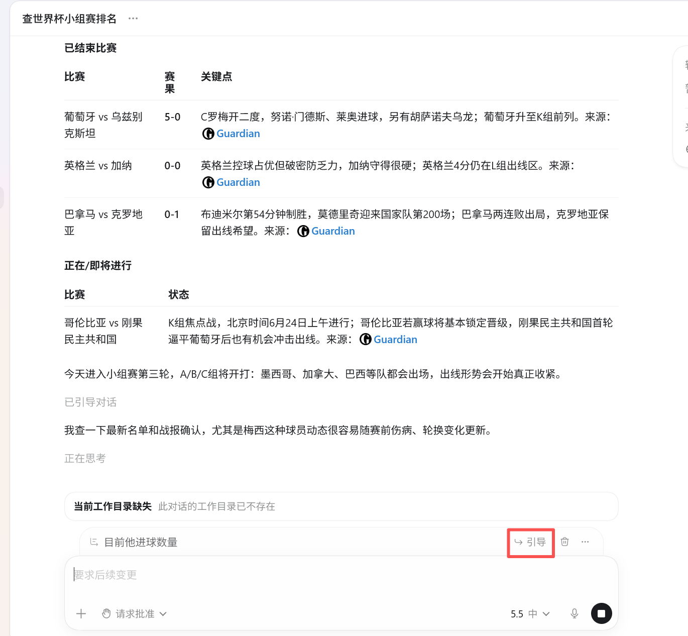
- 跟进行为：我们可以修改跟进行为，在 Codex 运行/思考时将后续操作加入队列，或引导当前运行，按下 Ctrl+Enter 可来回切换跟进和引导。
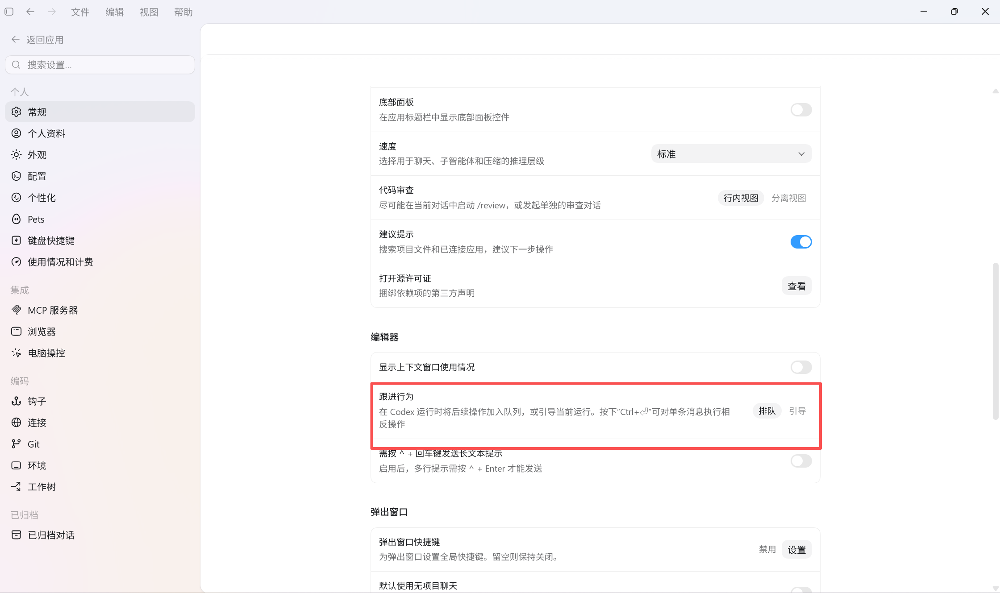
Codex计划模式
- 计划模式：普通模式下，你描述需求，AI 直接开始写代码；而计划模式如下：
你的需求 -> AI 提出澄清问题 -> 生成详细计划 -> 你确认 -> AI 执行
- 该模式适用于：1、首次搭建项目；2、一些大规模的文件/代码改动和重构；3、复杂 Bug 修复；4、多步骤任务。
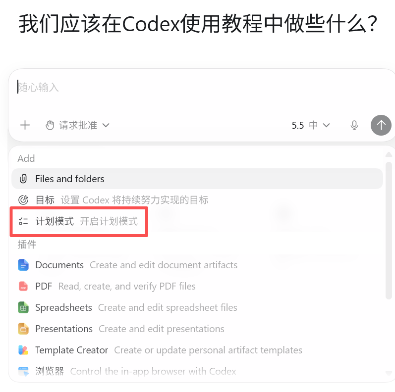
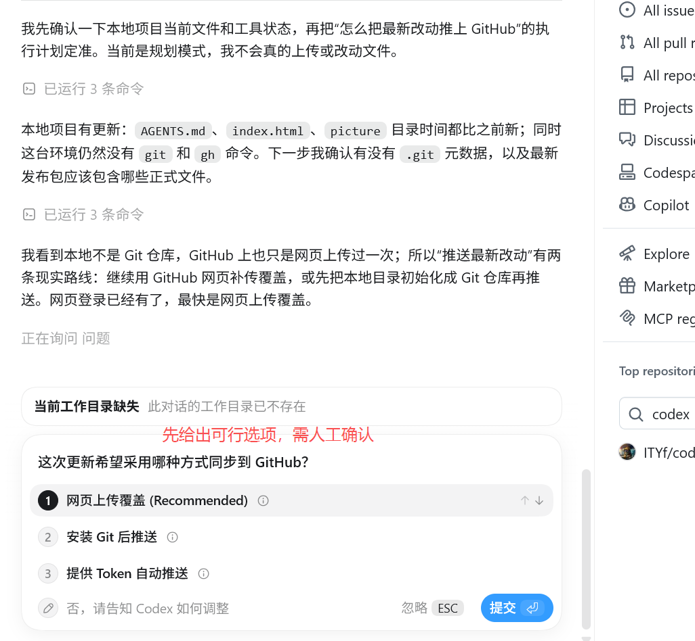
- 批注模式：右侧浏览器查看模式下，点击注释，可以分区域标注。回车即可执行注释内容。
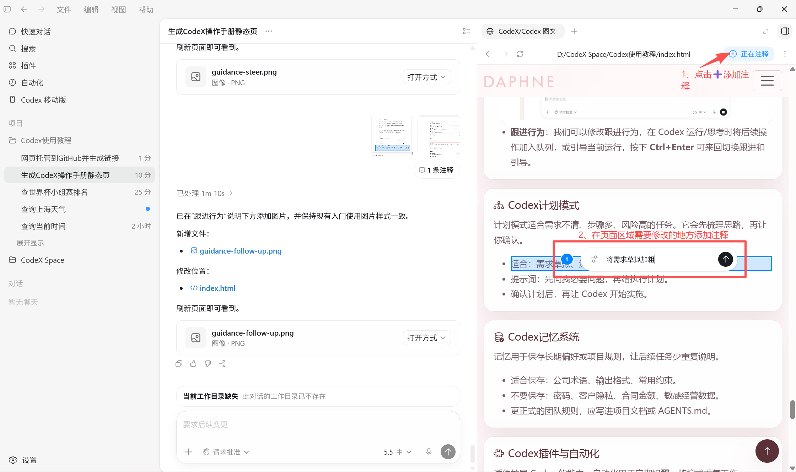
Codex记忆系统
开启一个新的对话，就进入一个全新的上下文环境，AI 完全不记得之前发生了什么，甚至对整个项目的记忆都是空白的。当项目变得复杂之后，每次对话都要重新给 AI 提示一遍项目背景，或者让 AI 自己再读一遍代码，就是非常低效的工作方式，还巨消耗 Token。
Codex增加记忆系统
- 通用方式：在项目根目录创建 AGENTS.md 文件（注意文件名别拼写错误，区分大小写）。
- 全局方式：Codex 的设置 => 个性化 => 自定义指令。
通用方式
在当前项目的根目录下创建 AGENTS.md 文件，并增加基本信息，注意这个 AGENTS.md 文件只对当前项目生效。例如：
- Codex 简介的内容已固定，后续维护页面时不再更改该简介文案。
- 后续入门使用模块新增的图片、卡片样式和尺寸，应与现有页面保持一致。
保存之后 Codex 会自动读取 AGENTS.md 文件的规则，然后把里面的内容自动作为上下文带入对话。
也可以在对话中让 Codex 自动归纳整理 AGENTS.md 文件的内容，然后再人工微调。
通过当前项目，把你学到的关于项目的信息保存到 AGENTS.md 文件
Q：AGENTS.md 文件是什么？
A：写给 Codex 的项目规则文件。
Q：AGENTS.md 应该写什么？
A：写工作约定、验证命令、风险边界，不要塞长篇文档。
AGENTS.md 不是越长越好。它应该写 Codex 做事前必须知道的规则，而不是把所有项目文档复制进去。
适合写进去的内容
- 项目使用的包管理器、测试命令、构建命令。
- 修改代码后必须执行的验证步骤。
- 不能触碰的目录、密钥、生成文件或外部系统。
- 团队约定的代码风格和提交前检查。
- 特定子目录的例外规则，例如后端、前端、脚本目录各自的验证命令。
不适合写进去的内容
- 大段产品背景、历史会议纪要、完整 API 文档。
- 会频繁变化的临时任务列表。
- 密钥、账号、Token 或只能给人看的内部凭证。
- 可以通过命令自动发现的信息，例如完整文件树。
全局方式
对所有项目生效，有以下两种实现方式：
- 通过设置里面的自定义来设置。
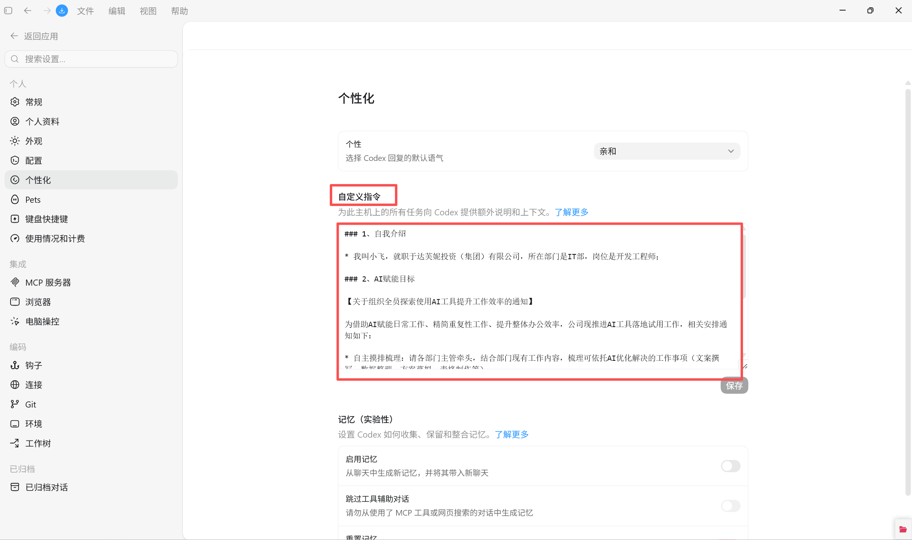
- 在 Codex 的缓存目录中创建 AGENTS.md 文件，路径一般是：
C:\Users\Administrator\.codex
Codex插件与自动化
插件
插件是第三方服务为 Codex 编写的软件包，这些第三方软件把自己的能力用插件的形式注入 Codex，目前 Codex 的插件市场已经非常丰富。
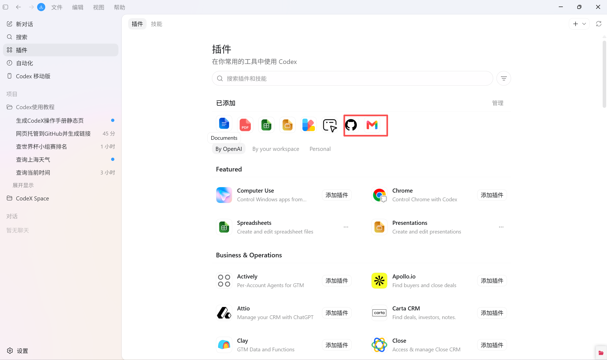
这里我们测试两个插件：Github 和 Gmail（Codex 在连接这两个插件的时候需要授权操作）。
测试场景：
GitHub优质项目推送：
/GitHub给我看一下本周关于 AI Agent 一个月内 Star 数前 10 的开源项目，然后将项目以列表形式/Gmail发送邮件给我。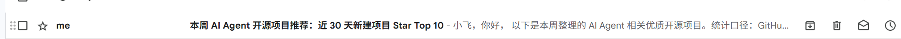
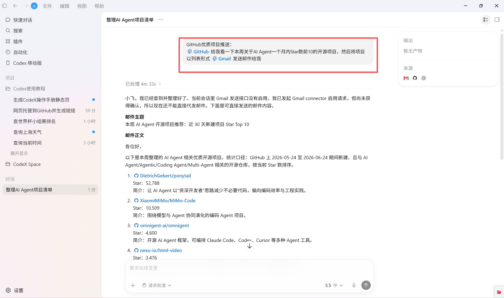
自动化
通过设置定期对话，实现工作自动化。
把上述任务做成自动化，然后每周五下午 5 点半，都发邮件给我。
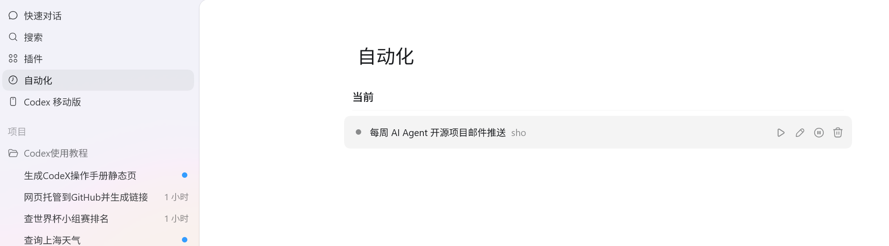
Codex Skills
Codex安装Skills
- 官方 Skills
- 第三方 Skills
- 自己编写 Skills
官方Skills
安装一个官方的 PDF Skills。
/PDF Skill 在当前目录下，帮我创建一个 PDF，记录所有的对话，以及网页效果图。第三方Skills
可根据工作场景安装第三方 Skills，安装前先确认来源、权限和公司数据边界。
自己编写Skills
当某类任务经常重复时，可以把步骤、输入格式、输出标准和检查项沉淀成自己的 Skills。
Codex MCP
MCP 可以让 Codex 连接外部工具或数据源，是偏 IT 的进阶连接方式。
- 适合：连接 GitHub、知识库、内部系统或授权工具。
- 普通同事只需知道“这是连接外部能力的桥”。
- 涉及公司系统时，必须由 IT 评估权限和安全。
把 Codex 从“会用”变成“可复用的工作流”
进阶阶段重点是标准化：同类任务用同一套提示词、同一套检查清单、同一套安全边界。
模板化
把常用任务写成固定模板：背景、输入、输出格式、风险提示、验收标准。
合规化
建立脱敏规则和人工复核机制，敏感数据默认不上传、不外发、不自动提交。
自动化
将稳定任务做成提醒、检查或批处理流程，先小范围试点，再扩大使用。
团队化
由 IT 维护统一入口、插件、Skills 和说明文档，各部门沉淀自己的业务模板。